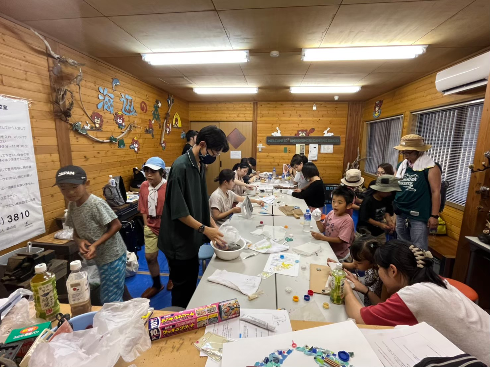
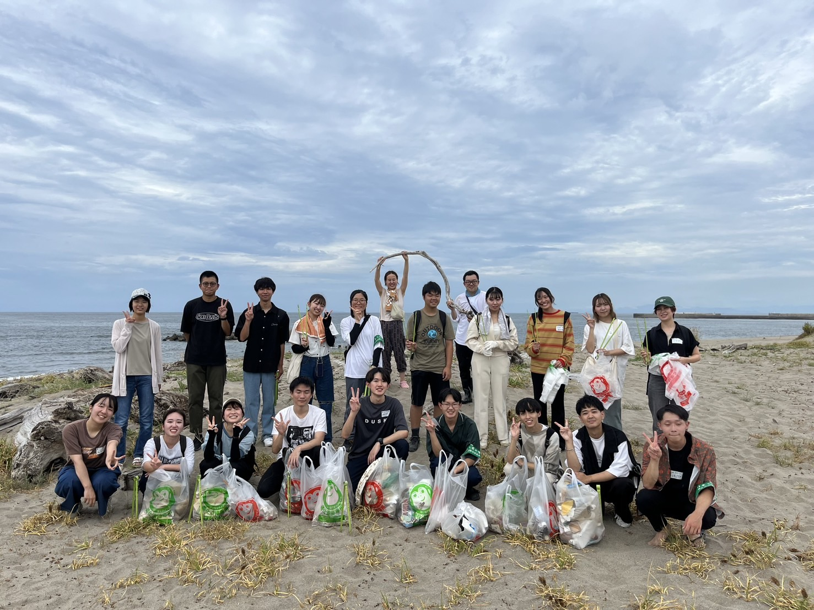
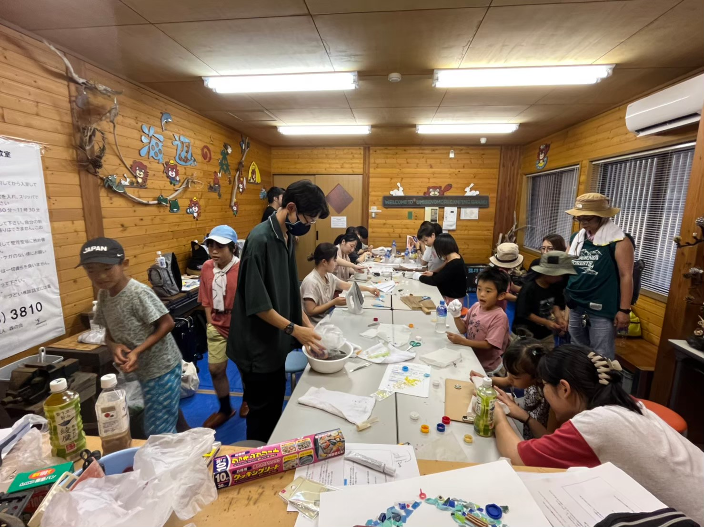
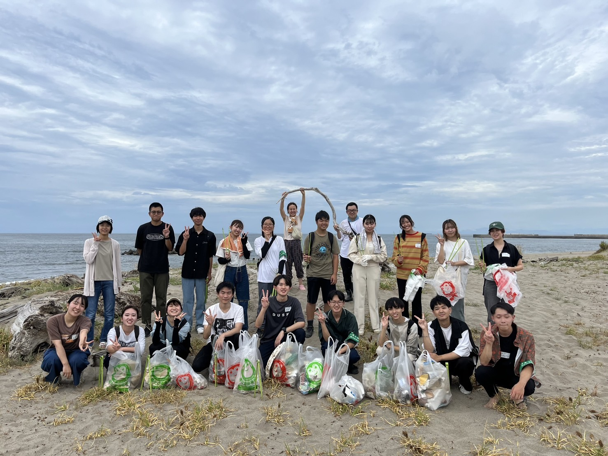

NSCWeeK


NSCWeeKとは
清掃活動を通して交流を行い、楽しみながら環境や他団体の活動についての見分を広める。 ゴミを利用したアートを作成しゴミをポイ捨ててはいけないという広報活動を行う。
NSCでの活動
新潟県にある太夫浜での清掃活動及び、他大学生との交流、拾ったゴミを用いてアクセサリーの制作、水生生物のアートの作成を地域の小学生と行いました。


清掃活動を通して交流を行い、楽しみながら環境や他団体の活動についての見分を広める。 ゴミを利用したアートを作成しゴミをポイ捨ててはいけないという広報活動を行う。
新潟県にある太夫浜での清掃活動及び、他大学生との交流、拾ったゴミを用いてアクセサリーの制作、水生生物のアートの作成を地域の小学生と行いました。